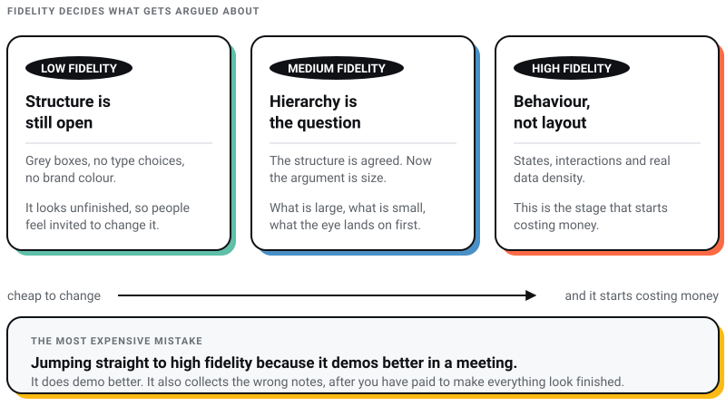
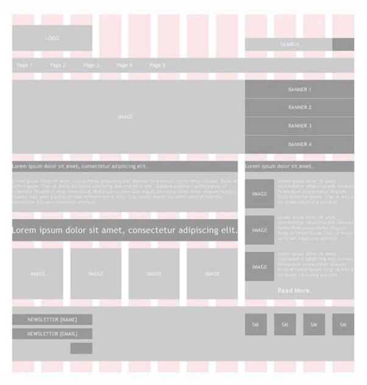
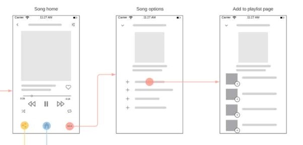
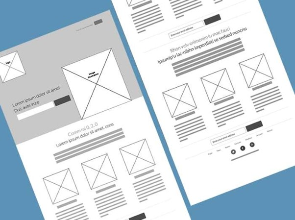
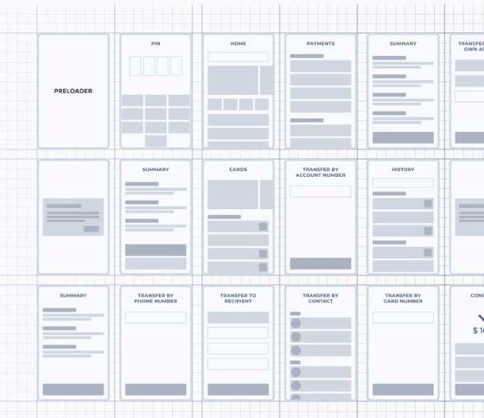
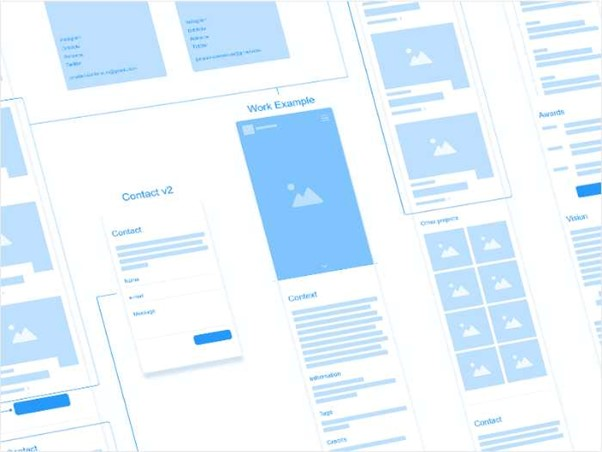
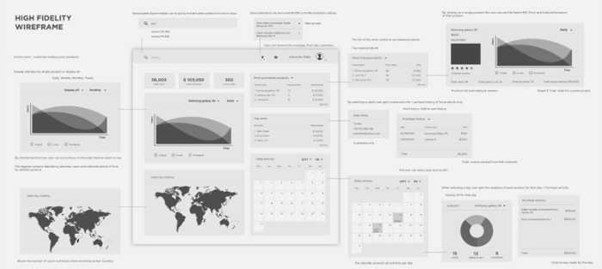

WEB DEVELOPMENT
WEB DEVELOPMENT
AI Website Builders vs Custom Development: Where the Shiny Tools Actually Break
AI website builders are fast, but are they right for your business? Discover where they excel, where they fail, and when custom development is the…

A wireframe is not a drawing. It is an argument about what a page is for, made cheap enough that you can afford to lose the argument.
I run Pixel Street, a web design studio in Salt Lake, Kolkata. We design and build for brands like Coca-Cola, ITC and Marico, and the wireframe stage is where those projects are quietly won or lost. Not because anybody drew the boxes well. Because a wireframe is the last moment at which a client can say this page is trying to do three things at once without somebody having to throw away a week of finished visual design.
The twenty examples below are not here to be admired. They are a fidelity ladder, and the one decision this page is really about is how finished your wireframe should look.
Show a client grey boxes and they talk about structure: what comes first, what is missing, why the enquiry form sits below the fold. Show the same client a polished screen with real type and one accent colour and they talk about the colour. Every time, on every project. I stopped treating that as a client failing years ago. It is a reasonable response to what you put in front of them.
Which gives a rule you can actually work to:
Low fidelity while the structure is still open. Grey boxes, no type choices, no brand colour. If it looks unfinished, people feel invited to change it, and that invitation is the entire point.
Medium fidelity once the structure is agreed and the question becomes hierarchy: what is large, what is small, what the eye lands on first.
High fidelity when you are testing behaviour rather than layout, which is where states, interactions and real data density belong. This is the stage that starts costing money, so arrive at it with the structure already settled.
The most expensive mistake I see is jumping straight to high fidelity because it demos better in a meeting. It does demo better. It also collects the wrong notes, and it collects them after you have paid to make everything look finished.

It settles structure before anyone pays for pixels. Layout and page order are decided while they are still free to change.
It lets you test flow without aesthetics in the way. You can walk a user through a journey and find the dead end, without anybody stopping to discuss the button radius.
It gives non-designers something to point at. Clients react far better to a concrete thing than they describe an abstract one, and a wireframe is the cheapest concrete thing I can hand them.
It surfaces the problems that are expensive later. A missing state, a form that needs a field nobody scoped, a navigation with no room for the section marketing forgot to mention.
Read the ladder, not the individual pictures.

The cheapest possible version of the argument. No tool, no grid, no decisions you would defend. Its value is that anyone in the room can pick up a pen and redraw it, which is exactly what you want in a first meeting and exactly what you lose the moment the sketch looks official.

Here the subject is the relationship between pages rather than any one page. This is where you find out that the navigation you agreed has no room for the section a stakeholder assumed was coming. Sketching several pages together costs an hour and regularly saves a fortnight.

The grid is the contract between design and development, and this is the stage to sign it. Fix your column count and gutters here and every later argument about alignment has an answer. Skip it and you get a build where every section is spaced by feel.

On this one the annotations are the deliverable and the boxes are only somewhere to hang them. If a wireframe has to survive being emailed to somebody who was not in the room, it needs notes. An unannotated wireframe gets interpreted, and it never gets interpreted the way you meant.

Screens laid out as a route rather than a set. Drawn this way, a dead end is obvious: a screen with an arrow going in and none coming out. That is a five-minute find at this fidelity and a support ticket at any other.

Home, about, contact, and the path between them. Most early-stage sites need less than the founder thinks, and a wireframe at this level is the easiest way to have that conversation without it sounding like you are cutting scope.

Account fields, recipient selection, amount. What matters in anything moving money is not the happy path but everything around it: the confirmation step, the failed transfer, the wrong account number caught late. Wireframe the failures alongside the success or you will design them under deadline.

Project showcase, skills, contact, room for writing. On a portfolio the order of the work is the design, and that decision is far easier to make in grey boxes than after you have spent an evening making the first project look beautiful.

Browsing, search, product detail, cart, checkout. Medium fidelity is right for retail because the argument has moved on from what exists to what dominates. Which is bigger, the price or the delivery promise? You cannot settle that in grey boxes and you should not still be asking it in a finished comp.

Opportunity creation, account detail, progress tracking. Internal tools are judged on density rather than beauty, because somebody will look at this screen forty times a day. Wireframe it with the number of rows they will really have, not the four that fit neatly.

A player, channel identity, supporting information. Television is navigated with a remote from across a room, so the thing to wireframe is the focus state: which element is selected, and where the selection goes on each direction press. Nothing else about the screen matters until that works.

Playback, episode detail, subscription management. The hard part of an audio app is that playback has to persist while the user wanders everywhere else, so a mini player belongs in the wireframe of every screen rather than on the one screen it lives on.

Options, comparison, feedback on the choice. Anything that helps somebody decide lives or dies on how many options appear at once. Wireframing forces you to commit to a number early, which is uncomfortable and much better than discovering it in usability testing.

Charts, graphs and tables together. High fidelity earns its cost here, because a data screen cannot be evaluated at low fidelity at all. A placeholder chart always looks readable. Load it with a real month of client data and half the layout stops working.

Search by keyword, by location, by category. The screens worth wireframing on a search interface are the two nobody asks for: no results, and far too many. Those are where people leave, and they are almost never in the brief.

Dense data on a small screen, which is the hardest combination in this list. Wireframe it at real device width rather than on a comfortable desktop canvas, and decide early which single number the screen exists to deliver.

Graphs, tables and controls on one canvas. The question a dashboard wireframe has to answer is what the user came to find out, phrased as a single sentence. If nobody on the project can say that sentence, the dashboard will end up as a wall of widgets and everyone will call it comprehensive.

Grey everywhere, with a single accent. This is my favourite constraint on the whole page. One colour means you have to decide what genuinely deserves attention, and it keeps the review honest, because a client looking at a mostly grey screen still talks about structure.

Clickable rather than static. Once a wireframe can be used, you can put it in front of somebody and stay silent, which is the only reliable way to find out whether a flow works. Static wireframes get reviewed with a designer narrating over them, and the narration hides the problems.

The same layout at several widths. Statcounter put mobile at 67.15% of Indian web traffic in June 2026, so a desktop-only wireframe is a wireframe of the minority case. Draw the narrow one first and the wide one second, and the hierarchy tends to come out right on both. There is more on that argument in our guide to responsive web design.
I get asked which tool to wireframe in far more often than I get asked what fidelity to work at, and it is the less important question. Paper is a legitimate answer. Still, one name on the old lists has died and every price has moved, so here is July 2026.
Adobe XD is not a live option. Adobe said it had no plans to invest further, and XD is no longer sold as a single application to new customers. Any course still teaching it as a current tool is at least two years stale.
Figma is the default. Its Starter tier is free, and a full editor seat on the Professional plan is $16 a month. For most studios the free tier covers wireframing outright, because wireframing needs neither shared libraries nor branching.
Balsamiq is worth paying for precisely because it looks unfinished. Its output is deliberately sketchy, which does the fidelity discipline for you and stops a client reacting to polish that is not there. It is $16 a month per editor on Starter, billed annually, with a fourteen-day trial.
Sketch remains Mac-only for editing, at $12 per editor a month on yearly billing, or $120 once for a Mac licence with a year of updates. The browser app handles viewing and handoff, not design.
Axure is the specialist choice, at $29 per user a month billed annually, and it is worth it only if you need conditional logic and real variables in a prototype. For a marketing site it is a great deal of machinery I would never touch.
Sketch on paper until the structure stops changing. Move to grey boxes in whichever tool your team already owns. Add fidelity only when the question in the room changes, and never add it just because a presentation is coming. Wireframe the empty state, the error and the narrow screen, because those are where real projects break and they never make it into the brief.
And write on the wireframe what each page is supposed to achieve. A wireframe with no stated purpose is decoration, and it will be reviewed like decoration. If you want the wider version of this argument, our web design process guide covers where wireframing sits in a full build, and designing a website picks up at the point the boxes get replaced with real design.
If you would rather have the structural decisions made than the boxes drawn, that is the job we do. Talk to a web design agency in Kolkata that will tell you when a page is trying to do three things at once.
8 min read 7 cited sources Web Design
Author
Khurshid Alam is the founder of Pixel Street, an AI-native design & development studio. Design thinking on weekdays and spreadsheets on weekends.
He writes about growth, design, and AI, mostly because someone has to say the quiet parts out loud.
WEB DEVELOPMENT
AI website builders are fast, but are they right for your business? Discover where they excel, where they fail, and when custom development is the…
 Web Design
Web Design
A client asked me this on a call last month: “Khurshid, everyone just asks ChatGPT now. Do we even need a website anymore?” He runs a business doing…
 Branding
Branding
From small-time gigs to booming creative industries, web and graphic designers have taken centre stage. Whether you’re a rookie or a design virtuoso…